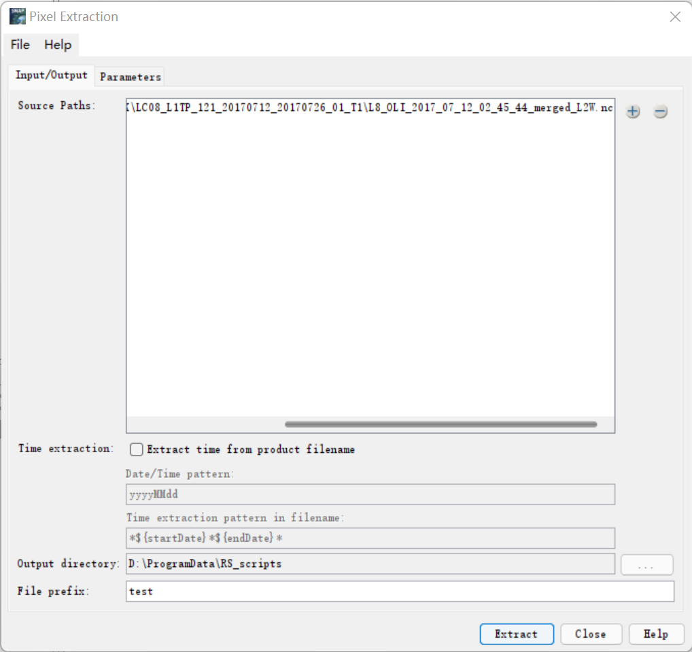
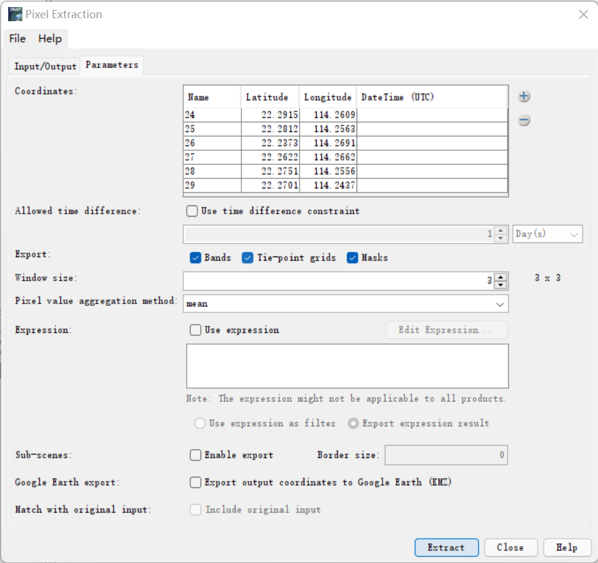

【SNAP】Snappy实现对遥感影像特定坐标像元值的批量提取
SNAP介绍
用过欧空局Sentinel系列卫星影像的，应该都接触过SNAP这个开源遥感处理平台。做水色遥感的更多会接触到其衍生的另一套开源遥感软件——SeaDas。
关于SNAP的特点和安装，可以参考大佬写好的文章：SNAP与Snappy介绍及安装。进行下一步前请先确定SNAP和snappy已经配置好。
像元值提取
在对遥感影像进行一系列的辐射定标、大气校正的预处理步骤后，我们可能需要提取一些特定坐标的数据进行处理与研究。在遥感影像中，地理信息数据是以栅格形式保存在文件中的，其地理坐标系所记录的是每一个像元中心的经纬度。因此，提取特定坐标的数据实际上是提取其所在像元的数据。
SNAP桌面端的操作方法
在桌面端的SNAP中，选择工具栏的Raster→Export→Extract Pixel Values，即可打开像元值提取工具Pixel Extraction，在这里我们完成参数设置即可实现像元值提取。
Input/Output一栏对应I/O设置：
- Source Path中可添加我们需要提取值的影像文件
- Output Directory为像元值表格文件的输出路径
- Prefix为最后提取出的ASCII表的文件名前缀。

Parameters一栏对应坐标提取过程的设置,此处仅对常用的几项进行说明：
- Coordinates会显示我们导入的坐标信息，其旁边的+号可以导入我们提前在csv文件写好的坐标数据。需要注意的是，csv表格的列名应与Coordinates所显示的列名一致。
- Windows size是以提取的像元为中心的窗口大小，例如3x3大小的窗口即会选取对应坐标的像元及其周围相邻的8个像元值进行提取与计算。
- Aggregation meathod对应窗口内像元值的处理方法，一般选择mean（取平均值）或者median（取中位数）。
完成参数设置后，后点击extract即可完成一幅影像的像元值提取。

SNAPPY批量提取像元值
对于长时序影像序列，我们往往需要提取少则十几幅多则数百幅影像的像元值提取，这一过程在桌面端重复操作必然是容易出现失误且无比坐牢的。因此，我们可以利用SNAP提供的Python API——Snappy进行批处理。
在设置好参数后，选择file一栏，display parameters将以xml格式显示出我们已经设置好的参数：
<parameters>
<sourceProductPaths>G:\landsat8_insitu_append\Acolite_HK\LC08_L1TP_121_20170712_20170726_01_T1\L8_OLI_2017_07_12_02_45_44_merged_L2W.nc</sourceProductPaths>
<exportBands>true</exportBands>
<exportTiePoints>true</exportTiePoints>
<exportMasks>true</exportMasks>
<coordinates>
<coordinate>
<name>24</name>
<latitude>22.2915</latitude>
<longitude>114.26095</longitude>
<originalValues/>
<id>0</id>
</coordinate>
<coordinate>
<name>25</name>
<latitude>22.28121667</latitude>
<longitude>114.2563</longitude>
<originalValues/>
<id>0</id>
</coordinate>
</coordinates>
<timeDifference/>
<windowSize>3</windowSize>
<outputDir>D:\ProgramData\RS_scripts</outputDir>
<outputFilePrefix>test</outputFilePrefix>
<exportExpressionResult>true</exportExpressionResult>
<aggregatorStrategyType>mean</aggregatorStrategyType>
<exportSubScenes>false</exportSubScenes>
<subSceneBorderSize>0</subSceneBorderSize>
<exportKmz>false</exportKmz>
<extractTimeFromFilename>false</extractTimeFromFilename>
<dateInterpretationPattern>yyyyMMdd</dateInterpretationPattern>
<filenameInterpretationPattern>*${startDate}*${endDate}*</filenameInterpretationPattern>
<includeOriginalInput>false</includeOriginalInput>
</parameters>可见我们输入的各项参数都是以xml格式存储的，其中每一个坐标是以Coordinate的子元素格式被保存于一个名为Coordinates的元素中，Coordinate又分为name, latitude, longitude等子属性。鉴于SNAP是基于Java开发的，因此Coordinates最终应返回一个array，Coordinate即为此array中的子元素（也是array）。
因此，整个像元提取过程在snappy中可以定义为一个函数：
import pandas as pd
import snappy
import jpy
def extract_pixel(ifile:str,odir:str,coord_data:pd.DataFrame):
'''
ifile: 输入影像文件路径
odir: 像元值提取结果输出路径
coord_data: 储存坐标的DataFrame，因此调用该函数前需将坐标文件通过pandas的read_csv方法读取为DataFrame
'''
# 创建Java数组变量
my_coordinates=jpy.array('org.esa.snap.pixex.Coordinate', len(coord_data))
Coord = jpy.get_type('org.esa.snap.pixex.Coordinate', 1)
# 通过snappy的ProductIO读取影像文件
product_subset = snappy.ProductIO.readProduct(ifile)
# 以ndarray形式读取坐标
name = coord_data[['No']].values.flatten()
lat = coord_data[['Latitude']].values.flatten()
lon = coord_data[['Longitude']].values.flatten()
# 坐标写入Java数组
for i in range(len(coord_data)):
my_coordinates[i] = Coord(str(name[i]),lat[i], lon[i], None)
# 调用snappy创建哈希表以储存参数，然后照着xml文件写入参数
parameters = snappy.HashMap()
parameters.put('exportBands', True)
parameters.put('exportTiePoints', True)
parameters.put('windowSize', 3)
parameters.put('outputDir', odir)
parameters.put('outputFilePrefix', "test")
parameters.put('coordinates', my_coordinates)
parameters.put('aggregatorStrategyType', "mean")
snappy.GPF.createProduct('PixEx', parameters, product_subset)最后根据自己的需要，用python里面的os和re库对影像文件和坐标文件进行遍历，即可实现批量提取像元值（文件存储路径因人而异，批处理这里就不展示了）。
附完整代码：
import re
import os
import pandas as pd
import snappy
import jpy
def extract_pixel(ifile:str,odir:str,coord_data:pd.DataFrame):
my_coordinates=jpy.array('org.esa.snap.pixex.Coordinate', len(coord_data))
Coord = jpy.get_type('org.esa.snap.pixex.Coordinate', 1)
product_subset = snappy.ProductIO.readProduct(ifile)
name = coord_data[['No']].values.flatten()
lat = coord_data[['Latitude']].values.flatten()
lon = coord_data[['Longitude']].values.flatten()
for i in range(len(coord_data)):
my_coordinates[i] = Coord(str(name[i]),lat[i], lon[i], None)
parameters = snappy.HashMap()
parameters.put('exportBands', True)
parameters.put('exportTiePoints', True)
parameters.put('windowSize', 3)
parameters.put('outputDir', odir)
parameters.put('outputFilePrefix', "test")
parameters.put('coordinates', my_coordinates)
parameters.put('aggregatorStrategyType', "mean")
snappy.GPF.createProduct('PixEx', parameters, product_subset)
if __name__=="__main__":
ifile = r"L8_OLI_2018_03_09_02_45_33_merged_L2W.nc"
odir = "./"
coord_data_path = r"LC08_L1TP_121_20180309_20180320_01_T1.csv"
coord_data = pd.read_csv(coord_data_path)
extract_pixel(ifile,odir,coord_data)参考文章
Extracting pixel values Sentinel-2a L2A with Snap or Snappy
后记
本来这个博客是跟风搭的，打算记录一下自己写的一些有趣的代码和一些码代码的经验。 但是翻了一下自己写的代码屎山，有趣的代码就没几个能发出来的（发了怕是要被请去喝茶），那还是先放搬砖用的代码算了。